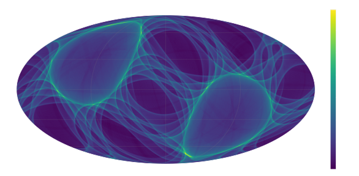
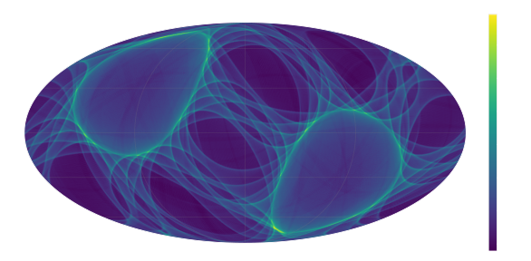
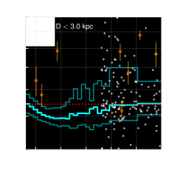
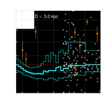
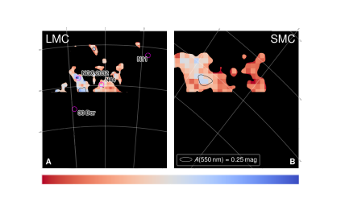
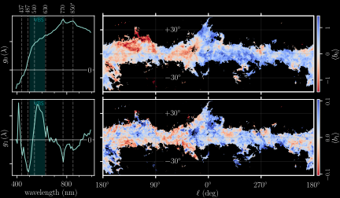

Milky Way Dust and Dynamics
Caltech, 30 October 2024
Gregory M. Green, Taavet Kalda, Xiangyu Zhang (张翔宇)
(MPIA, Heidelberg)

The Gaia revolution
Dynamics
How is the dark matter distributed on sub-galactic scales?
3D distribution of stars and dust
What is the composition of the dust? How does it vary?
New analysis methods
The richness and volume of the data requires more complex models, faster methods.
Dynamics
Gaia is delivering a snapshot of stellar positions and velocities: $\left\{ \vec{x} , \vec{v} \right\}$
Accelerations tell us about the potential: $$ \frac{\mathrm{d}\vec{v}}{\mathrm{d}t} = -\nabla \Phi \left( \vec{x} \right) \, . $$
$\mathrm{d}\vec{v}/\mathrm{d}t$ is only rarely observable (as of yet).
Knowing $\Phi\left(\vec{x}\right)$ would tell us the distribution of total mass (Baryonic + dark) in the Milky Way.
How to connect $\Phi\left(\vec{x}\right)$ with $\left\{ \vec{x} , \vec{v} \right\}$? Stationarity.
Stationarity assumption
Galaxy doesn't statistically change over time.
Stationarity assumption
Galaxy doesn't statistically change over time.
Stationarity assumption
Galaxy doesn't statistically change over time.
Stationarity assumption
Galaxy doesn't statistically change over time.
Stationarity assumption
Galaxy doesn't statistically change over time.
Hamiltonians, distribution functions and stationarity


$$\mathcal{H} = \frac{p^2}{2m} + m\Phi\left(q\right) \, ,$$ where $q$ are spatial coordinates, and $p$ are momenta.
$\mathcal{H}$ determines the flow of particles through phase space: $$ \dot{q} = \frac{\partial\mathcal{H}}{\partial p} , \ \ \ \dot{p} = -\frac{\partial\mathcal{H}}{\partial q} \, . $$
$\mathcal{H}$ determines how a distribution function $f\left(q,p\right)$ will change over time.
$\mathcal{H}$ determines how a distribution function $f\left(q,p\right)$ will change over time.
Collisionless Boltzmann Equation (CBE): $$ \frac{\mathrm{d}f}{\mathrm{d}t} = \frac{\partial f}{\partial t} + \sum_{\mathrm{dimension}\ i} \! \left( p_i \, \frac{\partial f}{\partial q_i} -\frac{\partial \Phi}{\partial q_i} \frac{\partial f}{\partial p_i} \right) = 0 \, . $$
⇒ Adjust $\Phi\left(q\right)$ until $\frac{\partial f}{\partial t} \rightarrow 0$ everywhere.
Hamiltonians, distribution functions and stationarity

Collisionless Boltzmann Equation (CBE): $$ \frac{\mathrm{d}f}{\mathrm{d}t} = \frac{\partial f}{\partial t} + \sum_{\mathrm{dimension}\ i} \! \left( p_i \, \frac{\partial f}{\partial q_i} -\frac{\partial \Phi}{\partial q_i} \frac{\partial f}{\partial p_i} \right) = 0 \, . $$
⇒ Adjust $\Phi\left(q\right)$ until $\frac{\partial f}{\partial t} \rightarrow 0$ everywhere.
There may be no $\Phi\left(q\right)$ that solves the equation everywhere!
We need to be able to calculate gradients of the distribution function:
$$ \require{color} \sum_{\mathrm{dimension}\ i} \! \left( v_i \, {\color{cyan} \frac{\partial f}{\partial x_i}} -\frac{\partial \Phi}{\partial x_i} {\color{cyan} \frac{\partial f}{\partial v_i}} \right) = 0 \, . $$
Our parameterization of the potential needs to be easily differentiable:
$$ \sum_{\mathrm{dimension}\ i} \! \left( v_i \, \frac{\partial f}{\partial x_i} -{\color{lightgreen} \frac{\partial \Phi}{\partial x_i}} \frac{\partial f}{\partial v_i} \right) = 0 \, . $$
Overview of “Deep Potential”

Fitting the distribution function

Normalizing flows
Invertible transformation: $\vec{x} \leftrightarrow \vec{y}$
$p \left( \vec{x} \right)$ is simple, but $p \left( \vec{y} \right)$ is complicated.
Sampling: draw $\vec{x} \sim p\big(\vec{x}\big)$, transform to $\vec{y}$.
Probability density in $\vec{y}$: $$ p \left( \vec{y} \right) = \left| \frac{\partial \vec{x}}{\partial \vec{y}} \right| p \left( \vec{x} \right) \, . $$
⇒ Requires Jacobian of coordinate transformation.
FFJORD: Grathwohl+(2018), Finlay+(2020)
Compute gradients of the distribution function

Normalizing flows are differentiable.
In Tensorflow, it's as simple as
with tf.GradientTape() as g:
g.watch(eta)
f = flow(eta)
df_deta = g.gradient(f, eta)
Fitting the potential

Represent $\Phi$ as a neural network: $\Phi_{\theta} \left( \vec{x} \right)$.
⇒ auto-differentiable: $\frac{\partial \Phi}{\partial \vec{x}}$.
Find parameters $\theta$ that minimize non-stationarity:
$$ \require{color} \DeclareMathOperator*{\argmin}{arg\,min} \DeclareMathOperator*{\asinh}{asinh} \theta^{\ast} = \argmin_{\theta} \left< {\color{lightgreen} \asinh \left| \frac{\partial f_{\varphi^{\ast}}}{\partial t} \right| } + \lambda \, \asinh \left( \max \left\{ -\nabla^2 \Phi_{\theta} , \, 0 \right\} \right) \right>_{ \vec{x} , \vec{v} \, \sim \, f_{\varphi^{\ast}} } $$
Penalize negative mass densities:
$$ \require{color} \DeclareMathOperator*{\argmin}{arg\,min} \DeclareMathOperator*{\asinh}{asinh} \theta^{\ast} = \argmin_{\theta} \left< \asinh \left| \frac{\partial f_{\varphi^{\ast}}}{\partial t} \right| + {\color{red} \lambda \, \asinh \left( \max \left\{ -\nabla^2 \Phi_{\theta} , \, 0 \right\} \right) } \right>_{ \vec{x} , \vec{v} \, \sim \, f_{\varphi^{\ast}} } $$
Average over sample drawn from DF:
$$ \require{color} \DeclareMathOperator*{\argmin}{arg\,min} \DeclareMathOperator*{\asinh}{asinh} \theta^{\ast} = \argmin_{\theta} {\color{cyan} \left< {\color{white} \asinh \left| \frac{\partial f_{\varphi^{\ast}}}{\partial t} \right| + \lambda \, \asinh \left( \max \left\{ -\nabla^2 \Phi_{\theta} , \, 0 \right\} \right) } \right>_{ \vec{x} , \vec{v} \, \sim \, f_{\varphi^{\ast}} } } $$
$N$-body simulation of a barred galaxy


Stationarity in a rotating frame.
$$\frac{\partial f}{\partial t} \neq 0$$
$$ \frac{\partial f}{\partial t} + \left[ \vec{\Omega} \!\times\! \left( \vec{x}\!-\!\vec{x}_0 \right) \!+\! \vec{v}_0 \right] \!\cdot\! \frac{\partial f}{\partial \vec{x}} + \vec{\Omega} \!\times\! \left( \vec{v}\!-\!\vec{v}_0 \right) \!\cdot\! \frac{\partial f}{\partial \vec{v}} = 0 $$
⇒ Infer rotation: $\vec{\Omega}$.
1. Fit distribution function


2. Fit gravitational potential
Accelerations: $\vec{a} = -\nabla \Phi$
Density: $\rho = \nabla^2 \Phi / \left(4\pi G\right)$


Non-stationarities
How much non-stationarity is left over in the system?
Galaxy is more stationary in rotating frame.
$\Omega$ inferred to ~15% accuracy.


Radial density profile
$\rho\left(r\right)$
Subtract stars from modeled density to obtain dark-matter density.
Application to Gaia: Modeling the selection function

 



Dust
Recovering the true distribution of stellar $\left\{ \vec{x} , \vec{v} \right\}$ requires accurate dust corrections.
Dust plays a key role in star formation and the chemistry of the interstellar medium.
Dust mapping
Dust mapping
Universal extinction curve: $A\left(\lambda\right) / A\left(\lambda_0\right)$.

Dust mapping
Universal extinction curve: $A\left(\lambda\right) / A\left(\lambda_0\right)$.

Dust mapping
R(V) varies.

Dust mapping
Dust mapping
Dust mapping
Varying extinction curve.

Data
Gaia BP/RP spectrophotometry
(“XP spectra”)
- $R \sim 50-160$
- slitless spectroscopy
- optical (330—1050 nm)
- 220 million stars (in DR3)

Example XP spectra

Example XP spectra

Example XP spectra

In comparison with LAMOST, Gaia XP …
- … has 20× as many stars
- … has 1/20th the wavelength resolution
- … is flux-calibrated
- … is all-sky, has a uniform selection function
Modeling approach
How to extract astrophysical information from these spectra?

How to extract astrophysical information from these spectra?

How to extract astrophysical information from these spectra?

How to extract astrophysical information from these spectra?

Gaia-LAMOST crossmatch

2.6 million matches.
Bootstrap the 1% of BP/RP stars with LAMOST matches to determine types of the other 99%.
(Include NIR photometry from 2MASS & WISE)
Forward model of stellar spectrum
$$ f_{\lambda}\left( \lambda \class{fragment}{\data{fragment-index=0}{ ,\class{star-color}{\Theta,\varpi,E,\xi} } } \right) \class{fragment}{\data{fragment-index=1}{ = {\color{gray} \underbrace{ \color{white} \ F_{\lambda}\left(\lambda,\class{star-color}{\Theta};\class{model-color}{W}\right) }_{ \mathrm{neural\ network} } } }} \class{fragment}{\data{fragment-index=2}{ \, \class{star-color}{\varpi^2} }} \class{fragment}{\data{fragment-index=3}{ \, e^{-\class{star-color}{E} \class{model-color}{R}\left(\lambda,\,\class{star-color}{\xi}\right)} }} $$
Stellar parameters:
- $\Theta =$ type (LAMOST)
- $\varpi =$ parallax (Gaia)
- $E =$ extinction (Bayestar19)
- $\xi =$ extinction curve shape (universal at first)
Model parameters:
- $W =$ neural net weights
- $R =$ extinction curve
$\xi$ plays the role of $R(V)$.
Model structure reflects the physics of $f_{\lambda}$.
Model structure
Model vs. Observations

Training the model


Update model, holding stellar parameters fixed.
Update stellar parameters, holding model fixed.
Converge on optimal model and stellar parameters.
Implemented in auto-differentiable framework (TensorFlow). ⇒ gradient descent.


Learned stellar models of Gaia XP spectra

Learned stellar parameters
Use XP spectra, NIR photometry & Gaia parallaxes to learn parameters of 220 million stars.
LAMOST spectra not used for parameter inference.
Infer dust R(V) for every star ...
Remove stars with bad $\chi^2/\mathrm{dof}$, low extinction, ...
~130 million R(V) measurements with XP (Zhang & Green 2024)
~130 million R(V) measurements with XP (Zhang & Green 2024)
Comparison with Schlafly+ (2016)
One-to-one relation between our extinction-curve measures

Comparison with Zhang+ (2023)
One-to-one relation between our extinction-curve measures
Compare with previous catalogs of R(V) ...
100s of R(V) measurements with O/B-stars (Gordon+23, Valencic+04)
~37,000 R(V) measurements with APOGEE/PS1 (Schlafly+2016)
~1 million R(V) measurements with LAMOST/XP (Zhang+2023)

~130 million R(V) measurements with XP (Zhang & Green 2024)
Distribution in the Galactic plane ...
100s of R(V) measurements with O/B-stars (Gordon+23, Valencic+04)

~37,000 R(V) measurements with APOGEE/PS1 (Schlafly+2016)

~1 million R(V) measurements with LAMOST/XP (Zhang+2023)

~130 million R(V) measurements with XP (Zhang & Green 2024)
3D map of R(V) ...
“Undoing” the line-of-sight integral: $$ A\left(\ell,b\right) = \int_0^{r} \!\! A\left(\ell,b,r'\right) \, \mathrm{d}r' $$
~37,000 R(V) measurements with APOGEE/PS1 (Schlafly+16,17)

~130 million R(V) measurements with XP (Zhang & Green 2024)

~130 million R(V) measurements with XP (Zhang & Green 2024)

~130 million R(V) measurements with XP (Zhang & Green 2024)

Patterns in the data

U-shaped relation: density vs. R(V):
 



ρ Ophiuchus is different.

Connection between high R(V) and star formation / UV radiation?


R(V) in the Magellanic Clouds
Two takeaways:
- U-shaped relation between density & R(V).
- Star-formation / UV radiation correlated with high R(V).
Implications for dust composition
Zhang, Hensley & Green, submitted
Dust-grain evolution
Dust-grain evolution
Grain-size distribution:
$\frac{\mathrm{d}n}{\mathrm{d}a}$ $\propto a^{-3.5}$ (MRN 1977).
Accretion and R(V)
Accretion and R(V)
Surface area of small grains grows faster than surface area of large grains.
⇒ R(V) tends to decrease.
Accretion and R(V)
Surface area of small grains grows faster than surface area of large grains.
⇒ R(V) tends to decrease.
Occurs at intermediate densities (the translucent interstellar medium).
Large amount of additional mass needed to change R(V) with silicates.
Coagulation and R(V)
Coagulation and R(V)
R(V) tends to increase.
Important in dense cores of clouds.
A simple picture:
- Accretion reduces R(V) at intermediate densities (steeper exinction curve).
- Coagulation increases R(V) at high densities (flatter extinction curve).
What about star-forming regions?
- Cycling of large grains from dense molecular clouds back into the surrounding ISM?
- Destruction of PAHs by ionizing radiation?
C19H11 from PAHdb
Polycyclic Aromatic Hydrocarbon (PAH)
C19H11 from PAHdb
Polycyclic Aromatic Hydrocarbon (PAH)
π→π* electronic transitions in the UV (responsible for 2175 Å extinction feature?).
Strong mid-IR emission features.
C19H11 from PAHdb
Polycyclic Aromatic Hydrocarbon (PAH)
π→π* electronic transitions in the UV (responsible for 2175 Å extinction feature?).
Strong mid-IR emission features.

Hensley & Draine (2023) dust model.
As PAH mass increases, optical extinction becomes steeper (R(V) decreases).
Requires less mass to change R(V) than accretion onto silicates.
Importance of 2175 Å bump.
R(V) vs. PAH fraction


R(V) vs. PAH fraction
PAH destruction ⇒ high R(V).
Ionizing radiation in star-forming regions.

$Q_{\mathrm{PAH}}$ from Planck Collaboration (2016), based on the Draine & Li (2007) model.

Anti-correlation between $Q_{\mathrm{PAH}}$ and $R(V)$ in Perseus.


Anti-correlation between $Q_{\mathrm{PAH}}$ and $R(V)$ in Taurus.
Is there information in the extinction curve beyond R(V)?
Green, Zhang, & Zhang, submitted
Component decomposition of extinction curves

Component decomposition of extinction curves
Component decomposition of extinction curves

“Dust-like” spatial patterns in lowest-order components

“Gaia-like” spatial patterns in higher-order components


Measuring equivalent widths of features
Features at 770 and 850 nm, and "very broad structure" (VBS).
Measure equivalent widths in ~24 million extinction curves.
Sky maps of equivalent widths


Correlations between feature strengths
Strong (but not perfect) correlations with R(V).
Deviations from this correlation have spatial structure.
Deviation of feature strength from expectation given R(V)
Feature profiles

Feature profiles
Both features are far wider than any DIB.